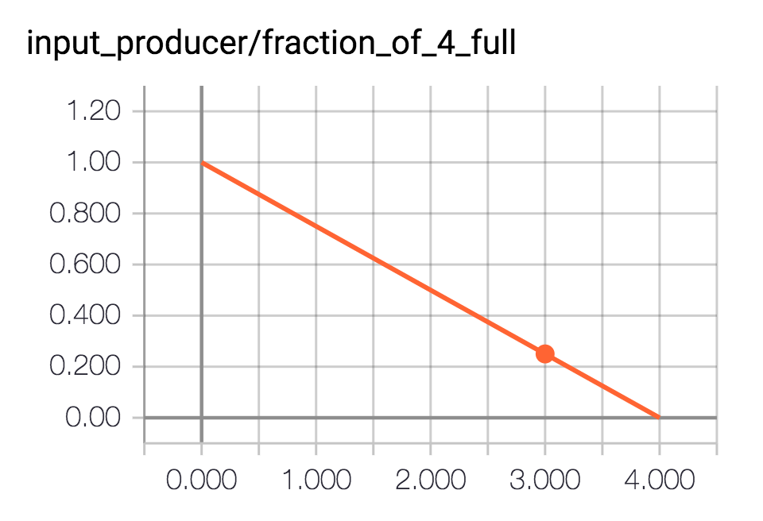

TensorFlow's QueueRunner
Sunday April 30, 2017
A TensorFlow QueueRunner helps to feed a TensorFlow queue using threads which are optionally managed with a TensorFlow Coordinator. QueueRunner objects can be used directly, or via higher-level APIs, which also offer automatic TensorBoard summaries.
import tensorflow as tf
session = tf.Session()QueueRunner Directly
To use a QueueRunner you need a TensorFlow queue and an op that puts a new thing in the queue every time that op is evaluated. Typically, such an op will itself involve a queue, which is a bit of a tease. To avoid that circularity, this example will use random numbers.
queue = tf.FIFOQueue(capacity=10, dtypes=[tf.float32])
random_value_to_enqueue = tf.random_normal([]) # shape=[] means a single value
enqueue_op = queue.enqueue(random_value_to_enqueue)
random_value_from_queue = queue.dequeue()At this point if you evaluate random_value_from_queue in the session it will block, because nothing has been put in the queue yet.
queue_runner = tf.train.QueueRunner(queue, [enqueue_op])Still nothing has been enqueued, but queue_runner stands ready to make threads that will do the enqueuing.
If you put more enqueue ops in the list, or the same one multiple times, more threads will be started when things get going.
coordinator = tf.train.Coordinator()
threads = queue_runner.create_threads(session, coord=coordinator, start=True)Using start=True means we won't have to call .start() for each thread ourselves.
>>> len(threads)
## 2There are two threads running: one for handling coordinated shutdown, and one for the enqueue op.
Now at last we can get at random values from the queue!
>>> session.run(random_value_from_queue)
## 0.69283932
>>> session.run(random_value_from_queue)
## -0.53802371The feeding thread will try to keep the queue at capacity, which was set to 10, so there should always be more items available to dequeue.
Since we used a coordinator, we can shut the threads down nicely.
coordinator.request_stop()
coordinator.join(threads)QueueRunner with Higher-Level APIs
It's possible to work with QueueRunner directly, as shown above, but it's easier to use higher-level TensorFlow APIs that themselves use QueueRunner.
It's common for TensorFlow queue-chains to start with a list of filenames (sometimes a list of just one filename) to read data from. The string_input_producer function makes a queue using provided strings.
queue = tf.train.string_input_producer(['a', 'b', 'c', 'd'])
letter_from_queue = queue.dequeue()This is a FIFOQueue, just as before, but notice we don't have an enqueue op for it. Like many things in tf.train, here TensorFlow has already done some work for us. A QueueRunner has already been made, and it was added to the queue_runners collection.
>>> tf.get_collection('queue_runners')
## [<tensorflow.python.training.queue_runner_impl.QueueRunner object at 0x121ee2c10>]You could access and run that QueueRunner directly, but tf.train makes things easier.
coordinator.clear_stop()
threads = tf.train.start_queue_runners(sess=session, coord=coordinator)tf.train.start_queue_runners automatically starts the threads.
>>> session.run(letter_from_queue)
session.run(letter_from_queue)
## 'a'
>>> session.run(letter_from_queue)
## 'c'
>>> session.run(letter_from_queue)
## 'd'
>>> session.run(letter_from_queue)
## 'b'
>>> session.run(letter_from_queue)
## 'd'By default, the queue will go through the original items multiple times, or multiple epochs, and shuffle the order of strings within an epoch.
Limiting the number of epochs uses a local variable, which must be initialized.
queue = tf.train.string_input_producer(['a', 'b', 'c', 'd'],
shuffle=False, num_epochs=1)
letter_from_queue = queue.dequeue()
initializer = tf.local_variables_initializer()
session.run(initializer)
threads = tf.train.start_queue_runners(sess=session, coord=coordinator)Now the QueueRunner will close the queue when there isn't anything more to put in it, so the dequeue op will eventually give an OutOfRangeError.
>>> session.run(letter_from_queue)
## 'a'
>>> session.run(letter_from_queue)
## 'b'
>>> session.run(letter_from_queue)
## 'c'
>>> session.run(letter_from_queue)
## 'd'
>>> session.run(letter_from_queue)
## OutOfRangeErrorAutomatic TensorBoard Summaries
A single-epoch queue will be helpful for illustrating an interesting thing about tf.train.string_input_producer: it automatically adds a TensorBoard summary to the graph.

It's nice to have direct control over every detail of your program, but the conveniences of higher-level APIs are also pretty nice. The summary that gets added is a scalar summary representing the percent full that the queue is.
tf.reset_default_graph() # Starting queue runners will fail if a queue is
session = tf.Session() # closed, so we need to clear things out.
queue = tf.train.string_input_producer(['a', 'b', 'c', 'd'],
shuffle=False, capacity=4, num_epochs=1)
letter_from_queue = queue.dequeue()
summaries = tf.summary.merge_all()
summary_writer = tf.summary.FileWriter('logs')
initializer = tf.local_variables_initializer()
session.run(initializer)
coordinator = tf.train.Coordinator()
threads = tf.train.start_queue_runners(sess=session, coord=coordinator)
for i in range(4):
summary_writer.add_summary(session.run(summaries), i)
session.run(letter_from_queue)
summary_writer.add_summary(session.run(summaries), 4)
summary_writer.flush() # Ensure everything is written out.After opening up TensorBoard with tensorboard --logdir=logs and going to http://localhost:6006/ and and turning off plot smoothing, you'll see this:

This shows that the queue, with capacity four, started 100% full and then every time something was dequeued from it it became 25 percentage points less full until it was empty.
For this example, the queue wasn't being refilled, so we knew it would become less and less full. But if you're reading data into an input queue that you expect to keep full, it's a great diagnostic to be able to check how full it actually is while things are running, to find find out if loading data is a bottleneck.
The automatic TensorBoard logging here is also a nice first taste of all the things that happen with even higher-level TensorFlow APIs.
I'm working on Building TensorFlow systems from components, a workshop at OSCON 2017.